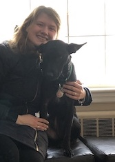

About Me
I am a second semester senior at University of Massachusetts Amherst, majoring in English with a Creative Writing Specialization and Education Minor. I enjoy writing short fiction, science fiction, and horror.
I grew up in Melrose, Massachusetts, where I still reside. I spent my freshman year at Westfield State University, before transferring to UMASS Amherst. I am majoring in English because writing has always been a passion of mine. I have also been a private tutor since 2016, but am currently seeking an editorial job in the Greater Boston area post-graduation in May of 2019. I worked as a museum educator during summer of 2018, at USS Constitution Museum in Charlestown, Massachusetts. I have also worked as a waitress since 2014 at Turner's Seafood in Melrose, Massachusetts.